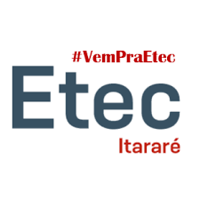

-
Hogwarts Legacy
Projeto simples tuilizando apenas HTML e CSS com apenas uma página bonita,
pretendo consertar o responsivo e adicionar mais páginas e funcionalidades para este projeto.
Projeto desenvolvido na semana do Zero ao Programador do canal Dev em Dobro.
-
AluraPlus
Projeo desenvolvido na Plataforma Alura.
Utilizado para melhor para a prática do HTML e CSS, junto com o VS Code.
-
Calc.JS

Desenvolvido no curso Onebitcode, utilizado para fixar a manipulação do DOM,
esquema de eventos e leituras de teclas do mouse.
HTML, CSS e JS, há a função de tema claro e escuro,
tudo isso para práticar as manipulações e as dinamicas que podem existir dentro do Document Object Model.